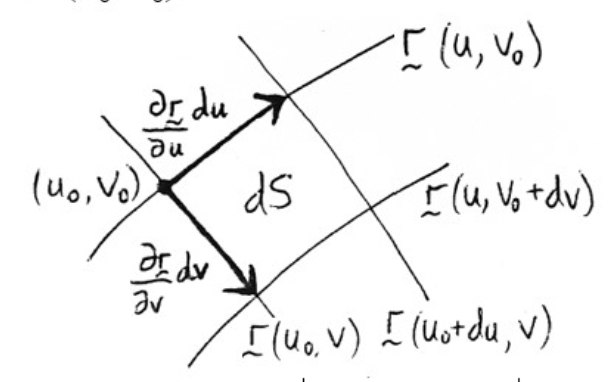

Parametric Surfaces
Contents
Parametric Surfaces#
Parametric Equations of a Surface#
We know a curve can be defined by a parametric vector-valued function
We know a 3D surface can be defined as graph of a function \(z=f(x, y)\) or \(F(x, y, z)=0\).
Surfaces can also be represented parametrically, but two parameters are needed: a surface can be defined as the range of a vector function of the form
Some common parameterizations#
a) Any surface \(z=f(x, y)\) may be expressed parametrically by taking \(\overrightarrow{\boldsymbol{r}}(u, v)=\langle u, v, f(u, v)\rangle\). For example, for \(z=x^{2}+y^{2}\) we can take \(\overrightarrow{\boldsymbol{r}}(x, y)=\left\langle x, y, x^{2}+y^{2}\right\rangle\).
b) The plane through the point with position vector \(\overrightarrow{\boldsymbol{r}}_{0}\) and containing two non-parallel vectors \(\overrightarrow{\boldsymbol{a}}\) and \(\overrightarrow{\boldsymbol{b}}\) has parameterization \(\overrightarrow{\boldsymbol{r}}(u, v)=\overrightarrow{\boldsymbol{r}}_{0}+u \overrightarrow{\boldsymbol{a}}+v \overrightarrow{\boldsymbol{b}}\).
c) Cylindrical surfaces can be parameterized using cylindrical coordinates (or an adaptation of them.
d) Consider a sphere of radius \(a\) centred on the origin. In spherical coordinates the sphere has equation \(\rho=a\), and we can take \(\theta, \phi\) as parameters, giving \(\overrightarrow{\boldsymbol{r}}(\theta, \phi)=\langle a \sin \phi \cos \theta, a \sin \phi \sin \theta, a \cos \phi\rangle\).
Surface Area#
Consider a 3D surface \(S\) with vector equation
For simplicity, suppose the parameter domain \(D\) is a rectangle. Divide it into a mesh of sub-rectangles \(R_{i j}\) of dimensions \(\Delta u\) by \(\Delta v\). \(S\) is correspondingly divided into a mesh of ‘patches’ \(S_{i j}\), where \(S_{i j}\) has area \(\Delta S_{i j}\).
Adding all the \(\Delta S_{i j}\) together gives an approximate value for the surface area: Taking the limit of this Riemann sum as the number of pieces in the mesh increases to infinity we get the surface area of \(S\) :
But what is the area element \(d S\)?
Normal vector and area element of a surface#
On \(S\), consider point \(P_{0}\) with position vector \(\mathbf{r}\left(u_{0}, v_{0}\right)\).
The area element \(d S\) at \(P_{0}\) is a tiny parallelogram spanned by the vectors \(\mathbf{r}_{u} d u=\frac{\partial \mathbf{r}}{\partial u} d u\) and \(\mathbf{r}_{v} d v=\frac{\partial \mathbf{r}}{\partial v} d v \quad\) evaluated at \(\left(u_{0}, v_{0}\right)\).
Hence
And \(A=\iint_{S} d S=\iint_{S}\left|\mathbf{r}_{u} \times \mathbf{r}_{v}\right| d u d v\)
Note that this can alternatively be written as \(d S=|\mathbf{n}| d u d v\)
where \(\mathbf{n}\) is the normal to \(S\) at \(P_{0}\)

Commonly used surface area elements#
a) For \(z=g(x, y), d S=\sqrt{\left(\frac{\partial g}{\partial x}\right)^{2}+\left(\frac{\partial g}{\partial y}\right)^{2}+1} d x d y\).
b) On the surface of a cylinder of radius \(a\) centred on the \(z\)-axis, \(d S=a d \theta d z\).
c) On the surface of a sphere of radius \(a, d S=a^{2} \sin \phi d \theta d \phi\).
Surface Integrals of Scalar Fields#
Suppose that over a surface \(S\) there is a scalar field \(f(x, y, z)\).
We can form a Riemann sum of \(f\) on \(S: \sum_{i=1}^{m} \sum_{j=1}^{n} f\left(x_{i j}, y_{i j}, z_{i j}\right) \Delta S_{i j}\)
where \(\left(x_{i j}, y_{i j}, z_{i j}\right)\) is an arbitrary point on \(S_{i j}\).
Taking the limit of the Riemann sum we get the surface integral of \(f\) on \(S\) :
where \(d S\) is defined as earlier.
E.g. The total charge on a surface \(S\) with surface charge density \(\sigma(x, y, z)\), is \(Q=\iint_{S} \sigma(x, y, z) d S\)